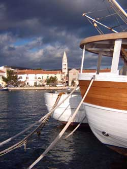

O TurnjuTuranj je atraktivno turističko mjesto sa oko 1200 stanovnika. Nalazi se na vrlo lijepom položaju u Pašmanskom kanalu i okružuje ga mali arhipelag sa 15 otočića. Prostire se uz otprilike 4 kilometra obale, a kroz mjesto prolazi i Jadranska magistrala što ga čini prometno lako dostupnim. U blizini su gradovi Biograd i Zadar, tako da je Turanj idilično mirno primorsko mjesto koje je ipak blizu središta regije. Povijest TurnjaPodručje Turnja bilo je naseljeno od brončanog doba, a prvi arheološki tragovi potječu još iz mlađeg kamenog doba. U brončano doba su bile naseljene "gradine" na brdima oko Turnja i jedna na otočiću Ričulu (Zeleni školj) na kojem se je kasnije nalazila i antička lučica. U to doba je otočić još bio spojen sa kopnom. Prvotno naselje se zvalo Tukljača (Tukljačane, Tuklječane), a u rimsko doba su se tu nalazile tri lučice i veliko rimsko imanje. Tukljača je u to vrijeme bila samostalna župa, a iz tog vremena su sačuvane tri crkvene knjige na glagoljici i dva povijesno važna glagoljaška kamena natpisa. Sačuvan je i dio antičkog vodovoda Biba - Jader. Na mjesnom groblju se nalazi crkvica koja je 845. godine podignuta na ostacima rimske ville rustice, a koja se u povijesnim ispravama naziva crkva Neoskvrnjenog začeća ili Sv. Marija, a u nekim spisima i Stella maris. Sam Turanj se u povijesnim ispravama prvi put spominje u XIII. stoljeću,
a 1444. godine je u Turnju sagrađena utvrda hrvatskih plemića Meštrovića.
Po toj kuli je Turanj dobio ime Toretta (prema latinskom turis - toranj, kula)
koje je s vremenom dobilo današnji oblik. Utvrda je bila sagrađena tik uz
more, a zidine su podupirale tri kule. Iz tog vremena je ostala sačuvana jedna
kula (Kaštel), glavna vrata i dio bedema. Turanj je za vrijeme Kandijskog
rata bio carinarnica, a inače je kroz povijest poznat kao megdanište. U to
doba je dio stanovništva bio sklonjen na obližnje otoke Pašman i Babac, a
Turanj su jednom prilikom Mlečani zapalili da ne bi pao u turske ruke. |
||